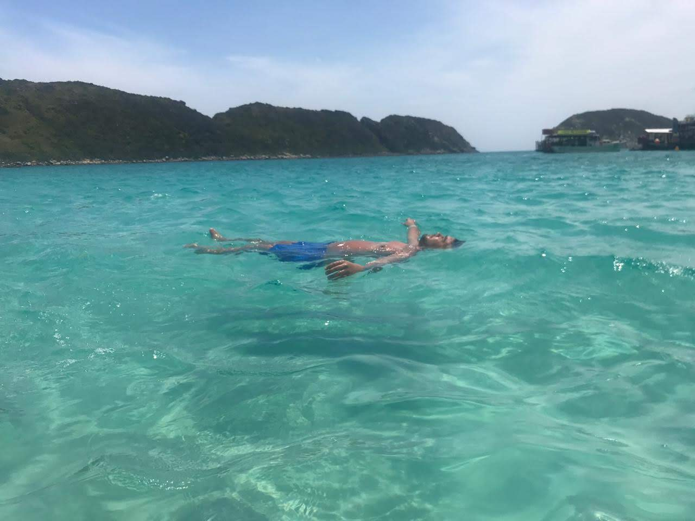
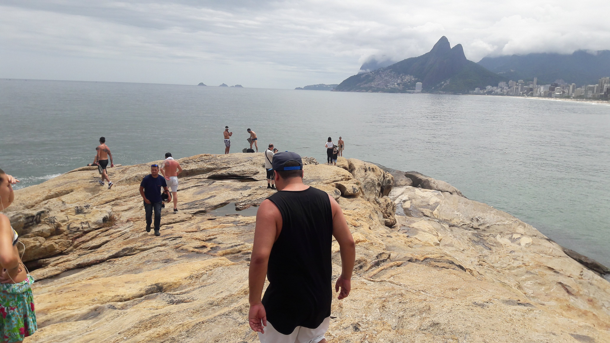
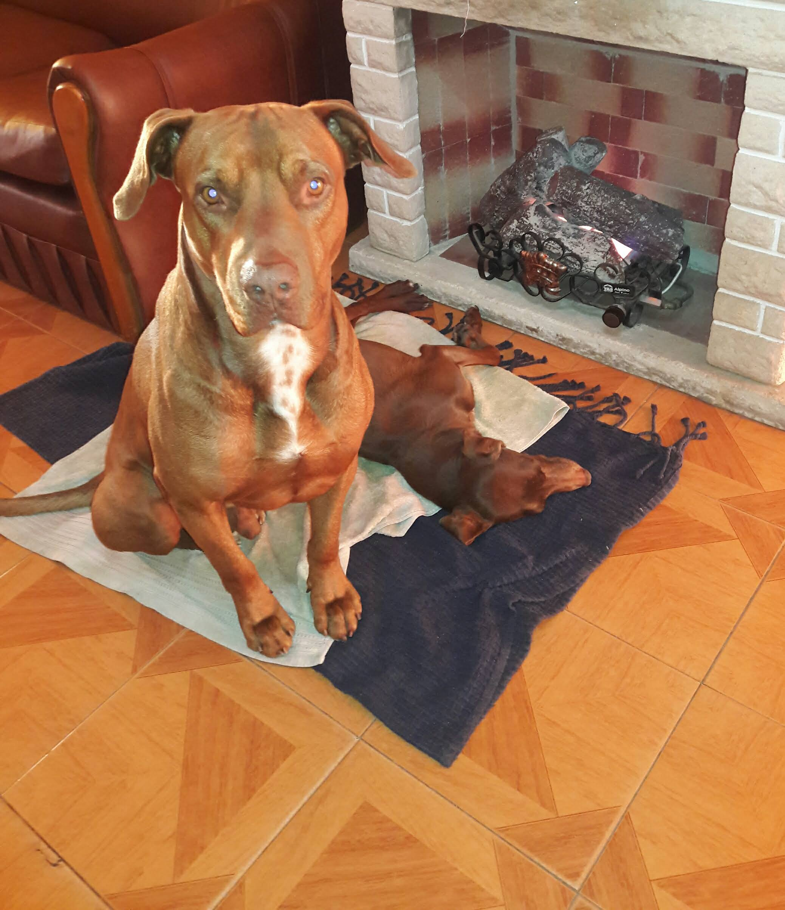
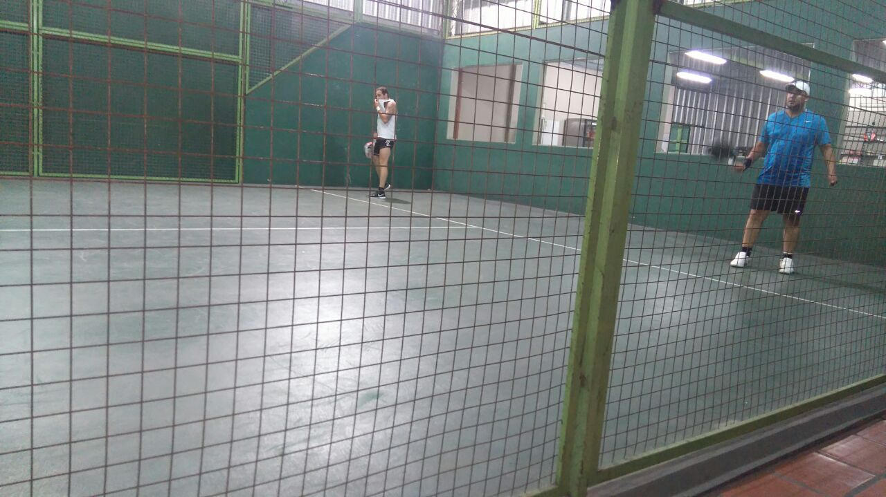
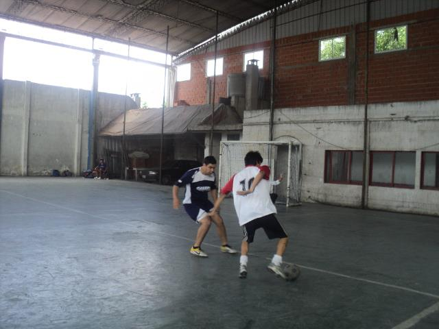
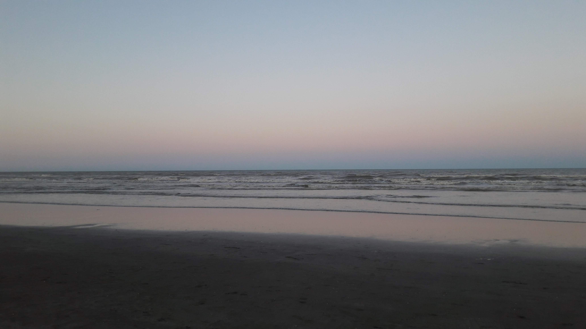
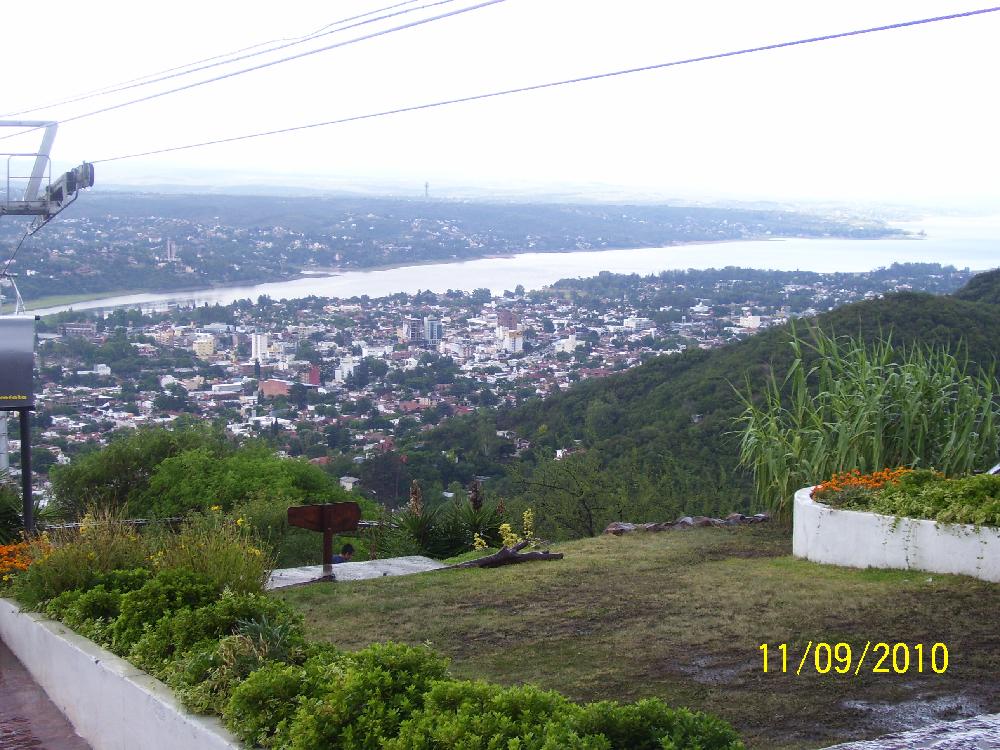
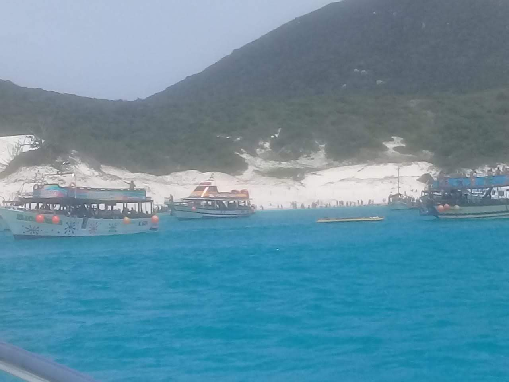
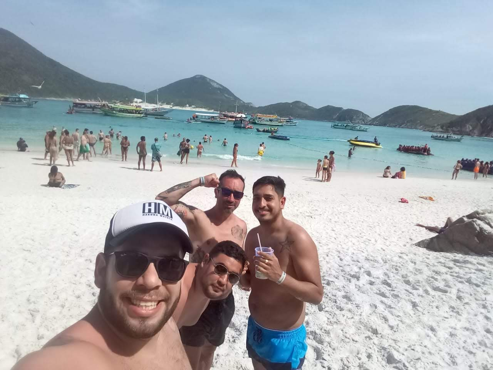
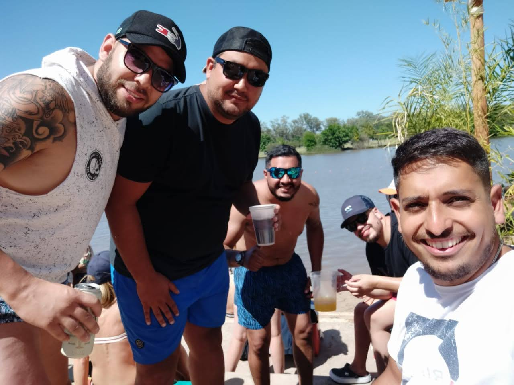

Un poco de mi...
Hola a todos, mi nombre es Matias, tengo 32 años y soy estudiante de la carrera tecnica en Ananlisis de Sistemas.
Naci en Capital Federal pero vivi toda mi vida en Rafael castillo, partido de La Matanza, Provincia de Buenos Aires.
No tengo hermanos pero si primos que son como si lo fueran.
Tengo 2 perros, Brand y Tila, las alegrias de la casa 😊.



Actividades que hacia antes de la pandemia
Me gusta mucho hacer deportes, sobre todo padel y futbol con amigos, trataba de por lo menos hacer cualquiera de las dos actividades dos veces por semana debido a los timpos.
Tambien era de juntarme mucho con mis amigos y tener salidas todos los findes semanas.
Por otro lado, me gusta viajar mucho y conocer lugares nuevos.







Perfil laboral
- Analista Senior
- Consultor SAP ERP
- Adminitrativo
- Sistemas y Tecnologia
Experiencia Laboral
COORDINADOR GENERAL DE ARBOLADO EN GOBIERNO DE LA CIUDAD DE BUENOS AIRES
Periodo: 03/2015 a 06/2020
Ingresé como pasante para ser operador SAP ERP por la carrera de Técnico en Análisis de Sistemas en la Gerencia de Mantenimiento de Arbolado de la Secretaria de Descentralización.
A medida que fueron pasando los años fui adquiriendo más responsabilidades hasta llegar a ser Coordinador General de la Gerencia de Arbolado y ser responsable de un equipo de 10 personas, que a su
vez, se encargaba de dar soporte técnico a operadores de las 15 comunas de la Ciudad de Buenos Aires.
Tareas a cargo:
- Capacitaciones, manuales de procesos y nuevas implementaciones del sistema SAP ERP para la gestión de arbolado.
- Informes ejecutivos semanales y mensuales.
Formacion
- Cursando la carrera de Tecnico Superior en Analisis de Sistemas
- Bachiller en economia y gestion de las organizaciones
- Operador Office Full
- Nivel de Ingles: Intermedio
Aptitudes
- Proactividad
- Resolucion de problemas
- Competencias digitales
- Organizacion
Objetivos Personales
Pertenecer a un equipo de trabajo donde pueda aplicar conocimientos y experiencia adquirida a lo largo de mi carrera, con retroalimentación
constante y oportunidades de crecimiento, donde permitan destacar mi potencial al máximo, mediante retos y reconocimientos por logros alcanzados.